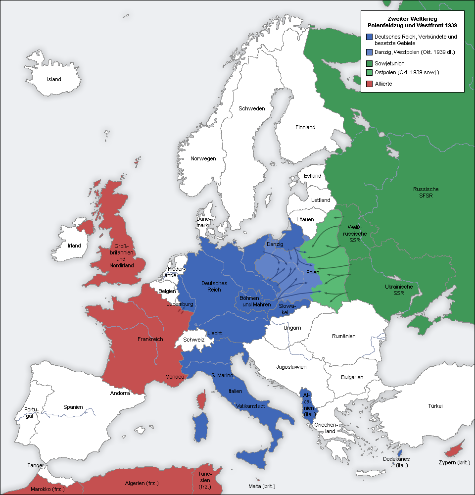

Alemania invade Polonia
Las tropas de Hitler cruzaron la frontera al amanecer sin declaración de guerra, con bombardeos sobre ciudades abiertas. Londres y París exigen el retiro inmediato: si Berlín no responde, la guerra general es cuestión de horas.

A las 4:45 de esta madrugada, sin ultimátum ni declaración alguna, el acorazado alemán Schleswig-Holstein abrió fuego sobre la guarnición polaca de Westerplatte, en Danzig, mientras columnas blindadas cruzaban la frontera por el norte, el oeste y el sur y la aviación descargaba sus bombas sobre ciudades y caminos repletos de refugiados. El canciller Hitler proclamó ante el Reichstag que Alemania «responde al fuego con el fuego», presentando como defensa lo que todo el mundo ve como una invasión largamente preparada.
Polonia resiste y ha decretado la movilización general, pero combate en condiciones desiguales contra una máquina de guerra que ensaya una velocidad nueva: tanques y aviones operando juntos, a un ritmo que los estrategas alemanes llaman guerra relámpago. La suerte quedó sellada, dicen los entendidos, hace apenas una semana, cuando Berlín y Moscú firmaron su sorpresivo pacto de no agresión: Hitler se aseguró así que Rusia no moverá un dedo. Nadie descarta que ese pacto esconda cláusulas que Polonia pagará dos veces.
El camino a esta madrugada se recorrió a la vista de todos. Renania remilitarizada en el 36, Austria anexada en el 38, y en Múnich, hace justo un año, las potencias entregaron los Sudetes a cambio de una firma que aseguraba que era «la última reivindicación territorial» del Reich; en marzo los tanques alemanes entraron en Praga, y la firma quedó valiendo lo que el papel. Ahora el pretexto se llama Danzig. Anoche mismo, la radio alemana denunció un asalto polaco a una emisora fronteriza en Gleiwitz; los corresponsales neutrales no han podido ver un solo prisionero ni un solo muerto que no huela a puesta en escena.
Varsovia vivió su primer día de guerra con una entereza que conmueve a los corresponsales: colas ordenadas frente a los carteles de movilización, trincheras cavadas en los parques por voluntarios de saco y corbata, sótanos convertidos en refugio mientras las sirenas parten la mañana. Las bombas, ya se sabe, no distinguen cuarteles: hay muertos en pueblos sin guarnición y sobre los caminos atestados de carros, colchones y ganado. En Londres, entre tanto, comenzó hoy la evacuación de los niños: centenares de miles de chicos con una etiqueta con su nombre prendida al abrigo suben a trenes rumbo al campo, y esa imagen, más que ningún discurso, dice lo que Europa espera.
Gran Bretaña y Francia, garantes de la independencia polaca, entregaron esta noche sus advertencias formales a Berlín. Tras Austria y Checoslovaquia, ya nadie en Londres habla de apaciguamiento: la palabra que se pronuncia, con espanto pero sin vacilación, es guerra. Veinticinco años después de Sarajevo, Europa vuelve a encender la mecha. Que Dios se apiade de este continente, porque sus gobernantes no aprendieron a hacerlo.